Futrix Robotics - Engineering in Deutschland.
Professionelle Robotiklösungen für reale Einsatzumgebungen.
Futrix - inspiriert von Future und Matrix.
Unsere Lösungen
Futrix Care
Roboterlösungen für Apotheke und Gesundheitswesen - für automatisierte Zustellung, Nachtservice-Unterstützung und die ferngestützte Medikamentenübergabe.
Mehr erfahren → Futrix Service
Kommerzielle Serviceroboter für Logistik, Reinigung und autonomen Transport – kombiniert mit KI-gestützter Navigation, Begleitung sowie interaktiven Kundenservice-Lösungen für Flughäfen, Krankenhäuser, Schulen, Campusgelände und weitere große öffentliche und private Einrichtungen.
Mehr erfahren →Futrix Industry
Industrielle Robotiklösungen für Automatisierung, Inspektion und intelligentes Materialhandling.
Mehr erfahren →Standardroboter
Neben individuellen Lösungen entwickeln und vertreiben wir auch standardisierte Robotiksysteme unter eigener Marke.
SR steht fuer Service Robot, RR fuer Restaurant Robot und LR fuer Logistic Robot.

Futrix SR-1
4-in-1 Reinigung (Kehren, Saugen, Schrubben, Wischen) fuer Bueros, Kliniken, Schulen und Einkaufszentren.
Details ansehen →
Futrix LR-1
Logistik- und Transportroboter für Materialfluss, Übergabepunkte und Flottenbetrieb.
Details ansehen →
Futrix RR-1
Restaurant-Roboter fuer Lieferservice, Abraeumen und mehrere Stationen.
Details ansehen →Warum Futrix
Welche Branchen bedienen wir?
Gesundheitswesen, Gewerbe und Industrie.
Welchen Beitrag leisten wir im Projekt?
Systemintegration, Inbetriebnahme und langfristiger Support.
Warum Standort Deutschland?
Engineering-getrieben, EU-Fokus und compliance-bewusst.
Vision
Wir sind überzeugt, dass Robotik der Schlüssel zur Zukunft der Produktivität ist. Futrix verbindet moderne Robotertechnologie mit den Anforderungen realer Einsatzumgebungen – für zuverlässige, skalierbare und zukunftssichere Systeme.